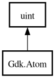

Gdk.Atom – gdk-3.0 Reference Manual
Packages
gdk-3.0
Gdk
Atom
intern
intern_static_string
name
NONE
Atom
Object Hierarchy:

Description:
[
CCode
( has_type_id =
false
) ]
[
IntegerType
]
public
struct
Atom
:
uint
Namespace:
Gdk
Package:
gdk-3.0
Content:
Static methods:
public
static
Atom
intern
(
string
atom_name,
bool
only_if_exists)
public
static
Atom
intern_static_string
(
string
atom_name)
Methods:
public
string
name
()
Fields:
public
static
Atom
NONE
Inherited Members:
All known members inherited from struct uint
MAX
MIN
clamp
from_big_endian
from_little_endian
from_pointer
max
min
parse
to_big_endian
to_little_endian
to_pointer
to_string
try_parse